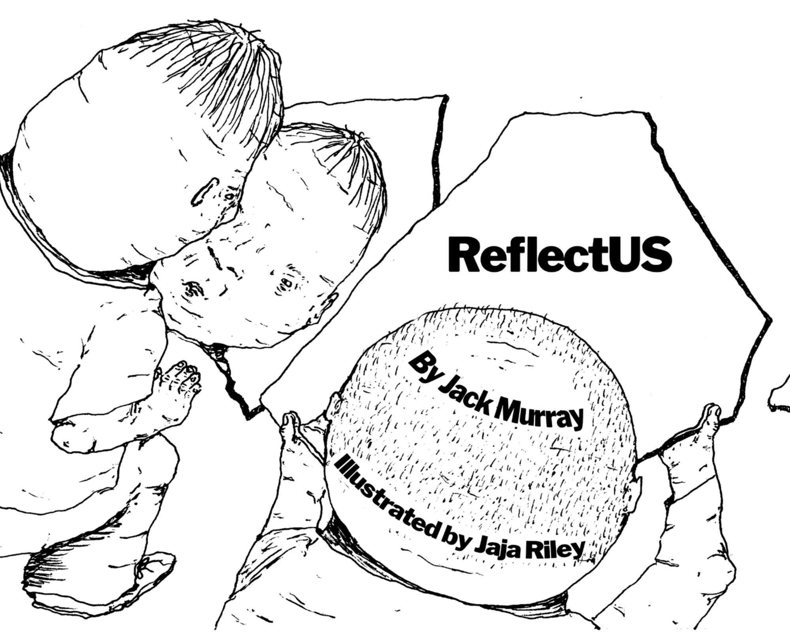
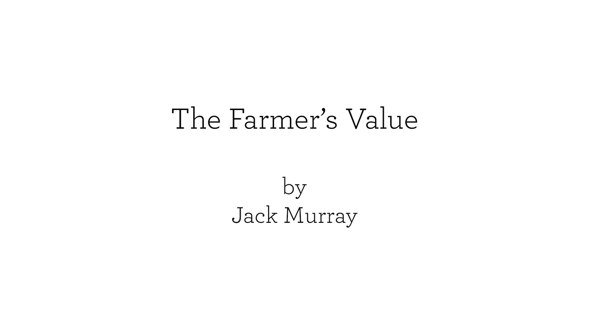
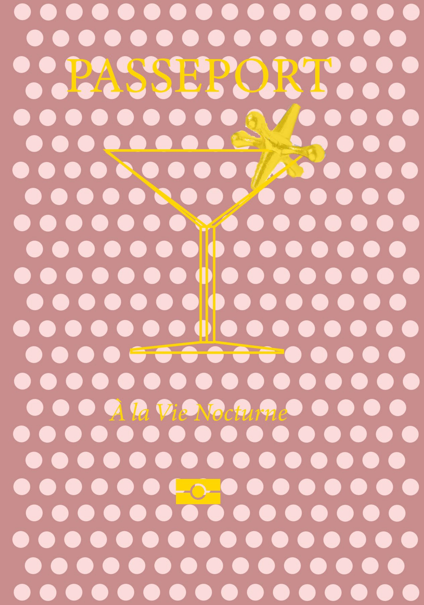
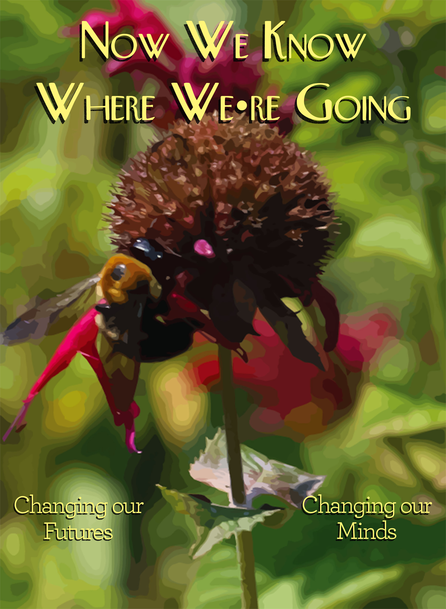
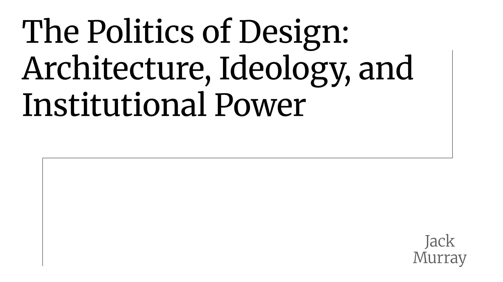
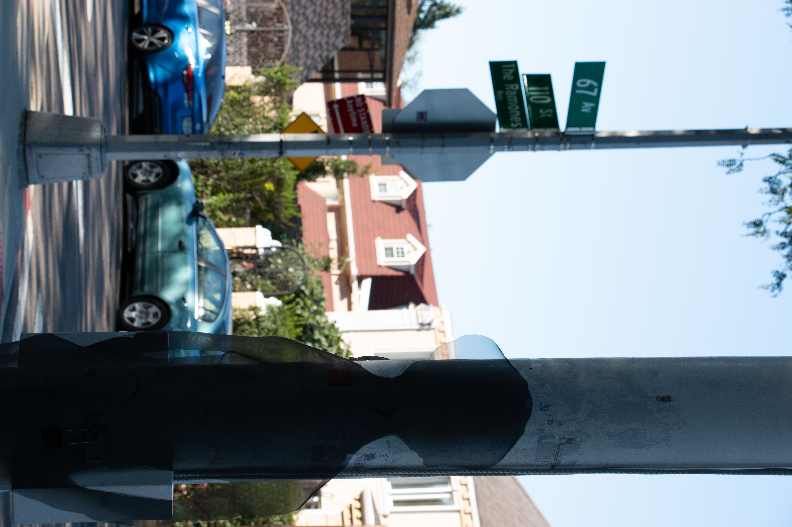

Jack Murray — designer working across graphic design and data visualization, bridging politics and visual culture to make complex ideas clear.
Website & Database

Political Book

Documentary Film
Pop-Up & Paper

Gift Book

Climate Zine
Editorial & Research

Research & Theory
Illustration

Photography